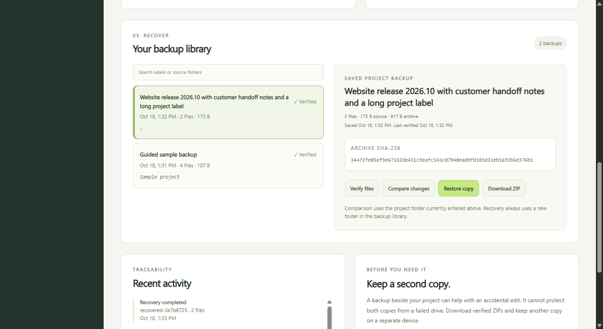
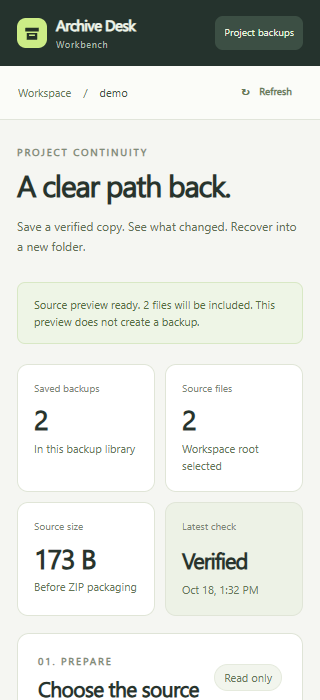

A copy you can inspect.
Preview included and excluded paths. Save a ZIP and verify its actual bytes against a SHA-256 file manifest.
A local workbench for small website and app projects. Create a saved ZIP, inspect its fingerprint, compare changes and recover the original files into a new folder.
Independent developer preview 0.1.0-candidate.1. Requires Node.js 24. This page presents the app. File operations run on your computer after you start the included local server.

Preview included and excluded paths. Save a ZIP and verify its actual bytes against a SHA-256 file manifest.
Review added, removed, changed and unchanged files. Download a comparison report tied to the exact baseline archive.
Restore into a completely new folder. Every recovered file is read back and checked. Existing destinations are refused.

node server.mjs http://127.0.0.1:4330/ node --test server.test.mjs vendor/cli.test.mjs
The app uses Node.js built-in modules. No runtime packages or account registration are required. Stop the server with Ctrl+C.
Keep project files and the backup library in separate folders. The browser accepts relative source paths inside that workspace. It does not accept an arbitrary filesystem location from a page request.
node server.mjs --workspace "C:/Projects/site" --storage "D:/ProjectBackups/site" --port 4330
Enter the command on one line. Use folders that you own and can read and write. The library retains backup records and recent operation history across server restarts.

Keeping a backup on the same drive does not protect it from drive failure. Download verified archives and retain another copy on a separate device.
Close programs that may change source files during a backup. The app does not provide an atomic filesystem snapshot or an adversarial filesystem race guarantee. This preview is tested within the documented Windows and Node.js scope. It is not a cloud service, unattended backup agent or production security certification.
All 19 executable backend and archive CLI tests passed, with eight independent acceptance workflows. The browser interface was checked at 320, 390, 768, 1024 and 1280 pixels. These are scoped Windows and Node.js checks, not cross-platform certification.